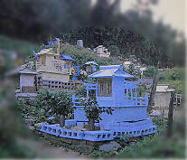
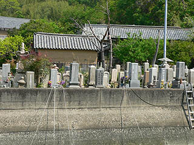
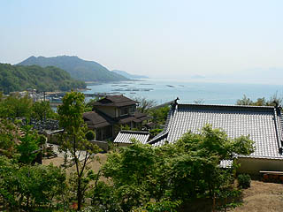
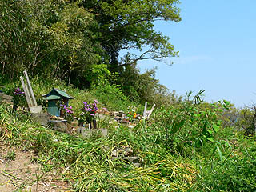
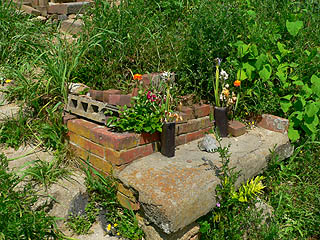
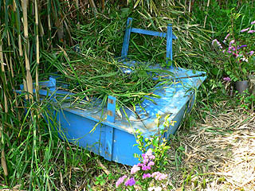
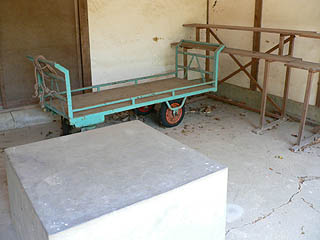

瀬戸内海の青い墓その1/香川県三豊市
香川県の西にちょこんと出っぱった荘内半島の隣にある粟島。
とある本にてこの粟島に青い墓があるというのを知ったのは10年以上前になる。

(画像はとある本から転載）
如何であろう。この勇姿。
まるで漁に赴く漁船のごとく荒波をかき分け冥土に突き進むかのような勢いのある造型。
鳥居が満載してあるところもポイント高し、です。
この数年間、この瀬戸内海の青い墓の事を考えていたが、今回の四国訪問を機にいよいよ島に渡ろうか、という事になった。
調べてみると粟島を含む塩飽諸島には両墓制が色濃く残るお土地柄だ。
両墓制とは何か。
それは民俗学上の呼称で早いハナシがいわゆる埋葬地とお墓がそれぞれ別の場所にあるケースの事をいう。
「えっ、だって埋葬してあるからお墓なんじゃん」と仰るのもごもっとも。
埋葬地＝墓という図式が出来上がっているが、この両墓制の場合、埋葬地を「ウメバカ」と称し、参拝する墓を「マイリバカ」というのだそうだ。
新しいホトケさんが出ると「ウメバカ」に埋葬し、印に霊屋という祠のようなものを設置し、場所によって違うが49日とか1周忌までその「ウメバカ」に花を供えたりお参りに行くのだが、その後「マイリバカ」に石塔を建立した後はそちらに墓参りに行くので「ウメバカ」には立ち寄らなくなるのだという。
むしろウメバカはあまり近付くものではない、と避けられている地方さえある。
埋葬地と墓地が同一であるという固定観念にとらわれている者からすると、何となく奇異な、そして埋められたホトケさんがチョット可哀想な気もするが、かつて土葬が主流だった頃は比較的ポピュラーだったようで、今でも全国のあちこちの地域で両墓制の墓地がみられるようだ（ま、土葬自体がほとんどないですけどね）。
そんな中でも関西、関東と並んで両墓制が多く見られる地域がこの瀬戸内海沿岸部なのである。
特に塩飽諸島の佐柳島や高見島では火葬が一般的になった今でも両墓制は色濃く存在し、火葬した遺骨をウメバカ（ステバカともいうそうな）に埋葬するのだという。
そんな塩飽諸島の西に位置する粟島に上陸する。

港の近くにある墓地に行ってみるも、いたって普通の墓地だった。
丁度墓参りをしている方がいたので「青い墓は知りませんか〜？」と聞くも全く判らずとの事。
小さな島にあんなに変わった墓があるのならみんな知ってるだろう、位の認識でしかなかったワタシ。
この後、島のあちこちに聞いて回り、もしかしたら島の皆さんの噂になってるかも知れないので「それは私です」とこの場を借りて御挨拶しておこう。
で、結局判らず終い。というかそんなのある訳ないじゃん的な答えばっかりでした。
この時点で段々焦り出すワタシ。
で、港から程近いお寺に行ってみる事にした。お坊さんに聞けば葬式やお墓の事も良く知っている筈だ。
我ながら名案。
しかし！お寺には誰もおらず（後で知るが無住の寺だった）、そこの墓地もいたって普通の墓ばかりで、段々敗色が濃くなって来たような気が・・・
とりあえず本堂裏の薮に分け入ってみるも蜘蛛の巣だらけになっただけ。人が入った痕跡すらない。
その裏山から海を見る。頭の中にはアコムの「タンと確認しなきゃあ〜」が連続リフレイン。

と、その時お墓参りに来たおじさんが。ダメ元で聞いてみると・・・
「あっ、そこだよ」と、あまりにもあっけない展開にビックリ。スイマセン、前振りが長くなってしまいましたが、やっと見つけました。
見れば境内の墓地が途切れたあたりが薮になっていて、その中にぽつんぽつんと卒塔婆が立っている。
・・・あまりにも地味過ぎて判りませんでした。

一歩足を踏み入れてみればそこはまごう事なき件の青い墓だった。
しかし本で見たような今にも出撃しそうな勢いは全くない。
どちらかというと崩れかかった霊屋ばっかりだ。
結局青い墓はこの一件だけ。しかも台座も崩れてしまって文字通り青息吐息。
霊屋の中には白木の位牌と六角、茶碗が置かれていた。
期待していた鳥居満載の台座は見るも無惨に朽ち果ててしまっている。
先述のおじさんに聞けばこの墓地はやはり両墓制のウメバカだそうだ。
かつては土葬だったので皆ここに埋葬して、その後マイリバカに墓石を建てたが、今は火葬してしまうのでこのウメバカ自体が使われなくなっているという。
結局おじさん、自分ちの墓参りそっちのけで粟島のお墓の説明を延々としてくれました…あっ、ありがとうございます…
霊屋が完全に崩壊してしまい、土台のレンガやブロックしか残っていない墓も結構多かった。
それでも花が供えられているということはマイリバカに参拝した際にウメバカにも参拝するのだろうか。

ウメバカをウロウロしていると片隅に青い墓の台座を発見！
恐らく本に出ていたものと思われるが、諸行無常ですなあ。

この写真が撮られてから10年余り。
その間、あるいはそれ以前に火葬が主となり、両墓制自体が消滅しかかっている。
恐らくあと10年したらこれらの痕跡すらもなくなってしまうだろう。そう考えると、青い墓の残骸だけでも見られてよかった、と思う。
それにしても、何で墓が青く塗られているのだろう？おじさん曰く漁師が多いので船に塗るペンキを使っていたのだという。
ウメバカから少し下ったところには小屋があった。
これはかつて土葬だった頃、棺をここまで運んできて最後のお別れをする場所だった。
中央の台座に載せてお坊さんが読経を上げ、その後にウメバカに埋葬したのだという。
この墓地は海沿いの集落からは若干高台にあり、ここの小屋に行くには急な坂道を登らなければならない。
しかも以前は未舗装道で雨の翌日の葬式などは棺担ぎの人たちは棺を倒さないように運ばなければならないから、相当大変だったらしい。
後ろにある台車でかつて棺を運んだのだろうか。

ところでこの粟島だけに限らず塩飽諸島ではかつてはイヤダニマイリといって対岸の弥谷寺に死者の遺髪を納めに行くという習俗があった。弥谷寺はこの辺では死者の行く山とされている。
今ではその習俗もなくなったが、イヤダニマイリという言葉だけは残っているそうである。
後で地図を見て気づいたのだが、この島にある墓地はすべて弥谷寺が望めるロケーションにある。
他の島もそうだったから、これは偶然とは思えない。
実際に弥谷寺が見えるかどうかはわからないが、少なくとも墓と弥谷が密接に関係していることだけは間違いない。
若干の徒労感を伴い粟島を後にした。
しかし！
その後、隣の志々島で凄い墓に出会うことになる。
志々島にGO !
2006.5.
珍寺大道場 HOME